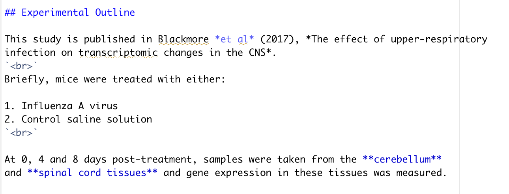

Lesson 2: R Markdown Basics
Objectives:
- Create an R Markdown file and be aware of its three main components: header, markdown and code chunks
- Be able to create and execute code chunks
- Know the syntax for basic R Markdown: headings, text links, lists, text formating etc.
- Insert images and tables using
knitr - Convert R notebooks into
pdf,htlmor worddocfiles
R Markdown files
The term R Markdown can be used to refer to two seperate concepts: (1) a file type and (2) a writing style / language.
The R Markdown file is a document which contains a mixture of text and code. The document contains three key features - a header, some text (written in the markdown language) and code chunks. This document can be rendered into various outputs including word documents, pdf files and websites. The final output will not only contain text and code, but also the resulting output of any executed code e.g., figures and tables.
The R Markdown language refers to the specific way in which we can write and format text within an R Markdown document. We will cover key aspects of this language throughout the workshop.
Header
The header of an R Markdown document is written in YAML format (another language, but this is not important). This section is optional but also very important in determining what the rendered output of an R Markdown file will look like. For example, the header contains information such as the document title, author and date. It is also the place where we can specify the document type to render to (e.g., .html, .pdf or .doc) and whether we want any table of cotents in the output. We will see several of these options throughout the course.

Markdown
The Markdown refers to all text that is written in the main body of the R Markdown document. Unlike when using R scripts, we do not have to use the # operator to comment out our text. In R Markdown files, all text will be seen as text not code, only text within code chunks (see below) is treated as code.
Within the Markdown language there are additional ways to format text e.g., inclusion of headings and sub-headings, bullet point and numbered lists, bold and italic fonts etc. We will come across how to achieve these style features throughout the workshop.
Code chunks
The code chunks are where we can write code. To add a new code chunk we press Cmd + Option + i on mac or Cntrl + Alt + i on Windows. A grey box appears in which we can write code. Only code within chunks (not the text part of the main document) can be executed. To execute a code chunk we can either use the standard Control + Enter (you can also use Cmd + Return if you are using a Mac), or we can use the buttons in the top right corner of the code chunk.
- To run only the selected code chunk - click the right-most green triangle
- To run all code chunks above (but not including) the selected code chunk - click the left grey triangle with green rectangle

Challenge: Starting with R Markdown
Create a new R Markdown document to later be rendered to a .html file. Give this markdown the title: “Transcriptomic analysis of mice experiencing upper- respiratory infection”. Save this file in the scripts folder of your project working directory.
Solution
To create a new R Markdown file we first navigate to File -> New File -> R Markdown.... When we click this the following window should pop up.

In the top box we can assign the name of our document. This does not have to be the same as the title we will give it in the header of the R Markdown file. You can call the document anything you like.
To specify which type of output file we would like the document to generate we make sure that the HTML box is selected. This does not mean that we are bound to this decision and can only render to .html, this is just the default that will happen if we click the knit button at the top of the window. If we later want to render the document to a .pdf or otherwise, these options still exist in the drop-down from knit.

Finally, we can add our title to the header at the top of our page.

Markdown syntax
The main body of text in an R Markdown file is written in Markdown syntax. There are a lot of things that we can do with Markdown syntax, far more than can be covered in this workshop. We will cover the key aspects of Markdown which you are most likely to want to use.
Headings
For all forms of report, whether it be .pdf or a website, headings and subheadings are essential for clear writing. In Markdown headings are created using the # operator. The more # operators in a row, the smaller the heading appears in our rendered document.
# Heading 1 - biggest creates:
Heading 1 - biggest
## Heading 2 - still big creates:
Heading 2 - still big
### Heading 3 - smaller creates:
Heading 3 - smaller
#### Heading 4 - smallest creates:
Heading 4 - smallest
Inline text formating
To make text bold use **double asterisks** or **__double underscores__**
To make test italic use *single asterisks* or _single underscore_
To make text superscript use ^caret^
To make test subscript use ~tilde~ To format text to look like code use backticks
Line breaks
To create a line break, put two or more spaces at the end of a sentence before pressing enter. This will ensure that the text starts on a new line. If you want an additional blank line before the next text, then use the <br> syntax on the line you wish to be empty and press enter again.
some writing
<br>
some more writing.
This will render as:
Some writing.
Some more writing.
Another option is to start a new line and use three asterisks (***) to insert a divider.
Lists - bulluted and numbered
To create an unordered list we can use a single asterisk (*) to denote each point:
- Item 1
- Item 2
- Item 3
To create an ordered list we can use numbers to denote each point:
- Item 1
- Item 2
- Item 3
We can also create subpoints in both types of list by using the + operator:
- Item 1
- Item 1a
- Item 1b
- Item 2
- Item 3
Challenge: Using R Markdown syntax
Create a .html file that look like this:
Solution
In R Markdown this would look like:

There are still lots more things that we can do in R Markdown.
Tables in R Markdown
There are several ways in which we can create a table in R Markdown.
Using standard markdown syntax
The first way is to use the | and - operators to create table.
| Column 1 | Column 2 |
| -------- | ---------|
| Data 1a | Data 2a |
| Data 1b | Data 2b |
This is rendered as:
| Column 1 | Column 2 |
|---|---|
| Data 1a | Data 2a |
| Data 1b | Data 2b |
To make the table look neater we can align the columns using the following syntax:
| Left align | Center align | Right align |
| :--------- | :----------: | ----------: |
| Data 1a | Data 2a | Data 3a |
| Data 1b | Data 2b | Data 3b |Now the table is rendered as:
| Left align | Center align | Right align |
|---|---|---|
| Data 1a | Data 2a | Data 3a |
| Data 1b | Data 2b | Data 3b |
Using knitr
The knitr package within R hosts functions that can help us produce aesthetic and dynamic reports. The package contains a function called kable which allows for simple knitting of a table from a standard R data.frame structure.
We create a data.frame first and assign it to an object.
table <- data.frame("Column 1" = c("Data 1a", "Data 1b"),
"Column 2" = c("Data 2a", "Data 2b"))When we execute this code (which is also done automatically when we knit the document) a data.frame object is created in our RStudio environment. We can pass this object to the kable function.
knitr::kable(table,
col.names = c("Column 1", "Column 2"),
caption = "Creating a table with knitr::kable()")| Column 1 | Column 2 |
|---|---|
| Data 1a | Data 2a |
| Data 1b | Data 2b |
This second approach is particularly useful if the table that you wish to render is based on data that you are working with.
Images in R Markdown
As with tables, there are several ways in which we can add images into our final rendered document.
Using standard markdown syntax
Again, we can use a standard markdown syntax. To insert an image this looks like .
For example,  will be rendered as:
RNA sequencing method
Using knitr
We can also use another knitr function called include_graphics.
knitr::include_graphics("images/transcriptomics.jpeg")This second method has the advantage of being more flexible and providing easier routes to change the image formating e.g., size, alignment, caption. We will come across some of these later.